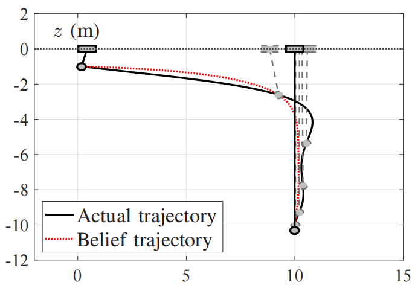

吊装系统 / 01
基于主动推理的桥式吊车防摇控制器
将主动推理控制与LQR控制思路结合，实现桥式吊车的快速防摇定位控制。

项目背景
- 吊机属于典型欠驱动系统，驱动装置运动会同时引起位置变化和负载摆动，提高定位精度和防摆性能对工业运输具有重要意义。
- LQR控制能够实现快速定位，但较大的控制增益可能导致控制初期产生过大的控制输入和负载摆角，影响系统安全性。
- 主动推理控制（Active Inference Control, AIC）通过最小化自由能实现状态估计与控制，但传统基于梯度优化的方法存在收敛速度较慢的问题。
主要工作
- 使用拉格朗日建模方法，建立欠驱动吊装系统非线性模型。
- 基于主动推理控制构建控制框架，重新构建广义状态变量描述系统动态行为。
- 将LQR思想融入主动推理控制，通过Riccati方程求解控制量，提高系统收敛速度。
- 通过仿真实验验证控制器在定位和防摆性能方面的有效性。
主动推理控制
- 主动推理控制（Active Inference Control, AIC） 基于自由能原理，将感知、状态估计和控制统一到同一优化框架中。 与传统方法直接估计系统真实状态不同，主动推理通过构建信念（belief） 描述智能体对外部世界状态的概率性认识。
- 信念由生成模型（generative model）产生和更新。 生成模型描述智能体对世界运行规律的内部预测， 通过比较预测观测与实际观测之间的差异，不断修正自身belief， 从而实现对环境状态的推断和不确定性的处理。
- 主动推理的核心思想是通过最小化自由能，使内部信念与外部世界保持一致。 智能体不仅可以通过改变自己的belief来适应世界， 也可以通过采取行动改变环境，使外部状态符合自身期望， 即“改变想法（change beliefs）”与“改变世界（change the world）”。
- 相比传统控制方法依赖确定性的状态反馈， 主动推理能够显式表示状态不确定性，并在部分观测和复杂环境下进行推断。 相比强化学习方法，其不依赖大量环境交互学习策略，具有更强的可解释性， 但性能依赖生成模型的准确性以及自由能优化过程。
MATLAB
Gazebo
Active Inference Control
LQR